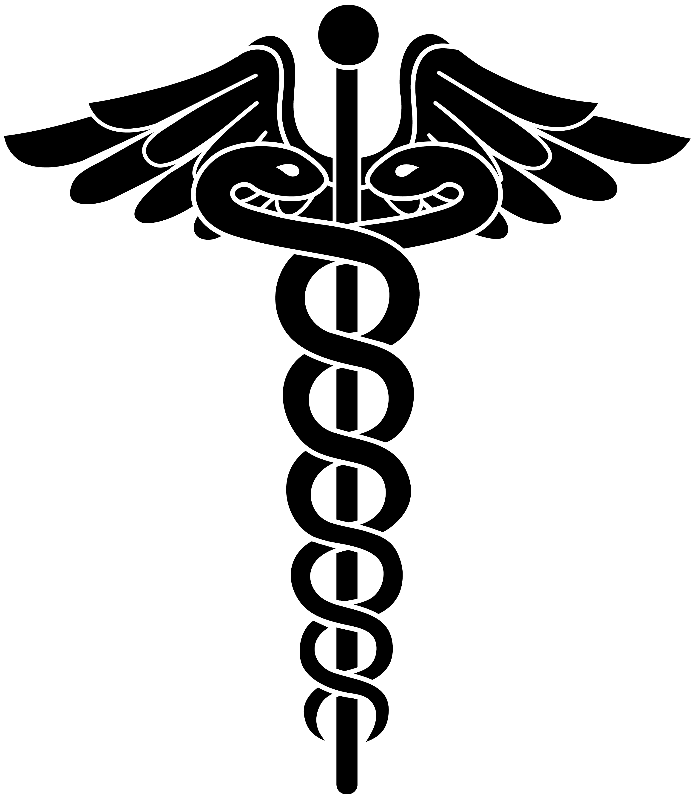

.jpg)
.jpg)
.jpg)
.jpg)
There are many diseases and conditions that affect the heart. As a group, heart disease is the leading cause of death the world over. In the United States, it is the most common cause of death for both men and women. According to the CDC, 1 in every 4 deaths is due to a heart condition. The most frequent type is coronary heart disease but there are many other types as well. We know that the heart has valves, muscular walls, and vessels supplying it with oxygen and nutrition called coronary arteries. Any one of these structures can be afflicted by disease. The heart also has an electrical system that can become dysfunctional, giving rise to rhythm abnormalities (arrhythmias). Some heart conditions are present at birth and are known as congenital defects. By considering which structure they are affecting, we can categorize most of the heart diseases and conditions into the following types:
.jpg)
Coronary arteries become thicker and narrower by a process known as atherosclerosis. This can reduce the heart’s blood supply. When oxygen demands are not met, ischemia will occur. Ischemia manifests as pain in the chest or angina. If an artery gets completely occluded with a clot, cardiac muscle will die. This is called infarction, commonly known as a heart attack.
.jpg)
Valves maintain unidirectional blood flow in the heart and when something goes wrong with them, different problems can arise. In stenosis, a valve is too stiff and narrow. It will not open wide enough causing obstruction to blood flow. During regurgitation, a valve is leaky and allows backflow of blood. Another condition is where a loose, weak valve will prolapse into the next chamber. Rheumatic fever, an illness that may occur after throat infections, has a propensity to damage heart valves. Valvular heart disease is the result of rheumatic fever in so many cases, a distinct clinical entity rheumatic heart disease (RHD) deals specifically with the issue.
Heart valve disorders can arise from 2 main types of problems:
.jpg)
The clinical term used for a disease that affects heart muscle is cardiomyopathy. An enlarged heart with weak walls is dilated cardiomyopathy. When the walls are abnormally thick, it’s hypertrophic cardiomyopathy (a cause of sudden death in athletes). These are the two chief forms of heart muscle disease. Cardiomyopathies can be the result of a variety of causes such as ischemia, hypertension, infections, toxins, and certain drugs. They could also be genetic in origin. In cases where no specific cause can be ascertained, the cardiomyopathy is termed idiopathic.
Cardiomyopathy refers to diseases of the heart muscle. These diseases have many causes, signs and symptoms, and treatments. In cardiomyopathy, the heart muscle becomes enlarged, thick, or rigid. In rare cases, the muscle tissue in the heart is replaced with scar tissue. As cardiomyopathy worsens, the heart becomes weaker. It's less able to pump blood through the body and maintain a normal electrical rhythm. This can lead to heart failure or irregular heartbeats called arrhythmias. In turn, heart failure can cause fluid to build up in the lungs, ankles, feet, legs, or abdomen. The weakening of the heart also can cause other complications, such as heart valve problems.
Cardiomyopathy can be acquired or inherited. "Acquired" means you aren't born with the disease, but you develop it due to another disease, condition, or factor. "Inherited" means your parents passed the gene for the disease on to you. Many times, the cause of cardiomyopathy isn't known. Cardiomyopathy can affect people of all ages. However, people in certain age groups are more likely to have certain types of cardiomyopathy. This article focuses on cardiomyopathy in adults.
Some people who have cardiomyopathy never have signs or symptoms. Others don't have signs or symptoms in the early stages of the disease. As cardiomyopathy worsens and the heart weakens, signs and symptoms of heart failure usually occur. These signs and symptoms include:
Other signs and symptoms may include dizziness; light-headedness; fainting during physical activity; arrhythmias (irregular heartbeats); chest pain, especially after physical exertion or heavy meals; and heart murmurs. (Heart murmurs are extra or unusual sounds heard during a heartbeat.)
.jpg)